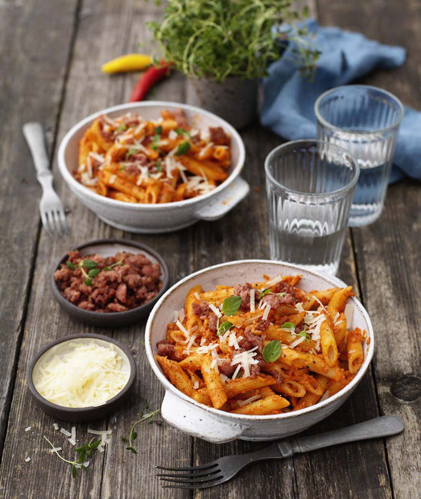

Penne All Vodka

Ingreidents needed
- Pasta
- Chopped shallots
- Chopped garlic cloves
- Chopped red chili
- Tamato Puree
- Vodka
- Mascarpone
- Pasta water
- Salt and pepper
Recipe
- Cook pasta in plenty of lightly salted water. Keep 1 dl of the pasta water when you pour it off. Drizzle a little olive oil over the pasta.
- Finely chop onion, garlic and chilli. Place in a large frying pan and fry until soft in olive oil .
- Raise the temperature in the pan and add the tomato puree and let fry for a minute. Be careful not to burn it.
- Pour in vodka and let it simmer together with the tomato sauce for a few minutes.
- Stir in mascarpone and pasta water. Season with salt and pepper.
- Stir the pasta into the sauce and serve with grated Parmigiano Reggiano, shredded basil and possibly crispy salsiccia.